Көркем еңбек · Аспаздық · Нан пісіру негіздері Art & Craft · Culinary · Basics of Baking Художественный труд · Кулинария · Основы выпечки
🥖 Әлем халықтарының асханасы. Нан пісіру негіздері
🥖 World Cuisine. The Basics of Baking
🥖 Кухня народов мира. Основы выпечки
Ұн, су, ашытқы — әр халықтың өз наны мен тоқашы. Flour, water and yeast — every nation has its own bread. Мука, вода, дрожжи — у каждого народа свой хлеб.
Нан пісіру (выпечка) — қамырдан жасалған тағамды ыстық пеште пісіру өнері. Нан — адамзаттың ең көне әрі ең маңызды тағамы: оны мыңдаған жыл бойы барлық халықтар пісіреді. Негізгі құрамы қарапайым — ұн, су, тұз және ашытқы, бірақ әр ел өз дәстүрін, климатын және дәмін қосады. Сондықтан француз багеті, итальян чиабаттасы, неміс крендельі мен қазақ бауырсағы бір-біріне ұқсамайды. Қамырдың түрін, илеу мен пісіру тәсілін білу — дәмді әрі әдемі нан жасаудың кілті. Baking is the art of cooking food made from dough in a hot oven. Bread is one of humankind's oldest and most important foods: every nation has baked it for thousands of years. The basic ingredients are simple — flour, water, salt and a leavening agent — but each country adds its own tradition, climate and taste. That is why a French baguette, an Italian ciabatta, a German pretzel and a Kazakh baursak are all so different. Knowing the type of dough and how to knead and bake it is the key to bread that is both tasty and beautiful. Выпечка — это искусство приготовления изделий из теста в горячей печи. Хлеб — одна из самых древних и важных пищ человечества: его тысячелетиями пекут все народы. Основные ингредиенты просты — мука, вода, соль и разрыхлитель, — но каждая страна добавляет свою традицию, климат и вкус. Поэтому французский багет, итальянская чиабатта, немецкий крендель и казахский баурсак так непохожи. Знать вид теста и способы его замеса и выпечки — вот ключ к вкусному и красивому хлебу.
Әлем халықтарының наны мен тоқаштары Breads & Pastries Around the World Хлеб и выпечка народов мира
🔍 Үлкейту үшін суретті басыңыз. 🔍 Tap a photo to enlarge it. 🔍 Нажмите на фото, чтобы увеличить.
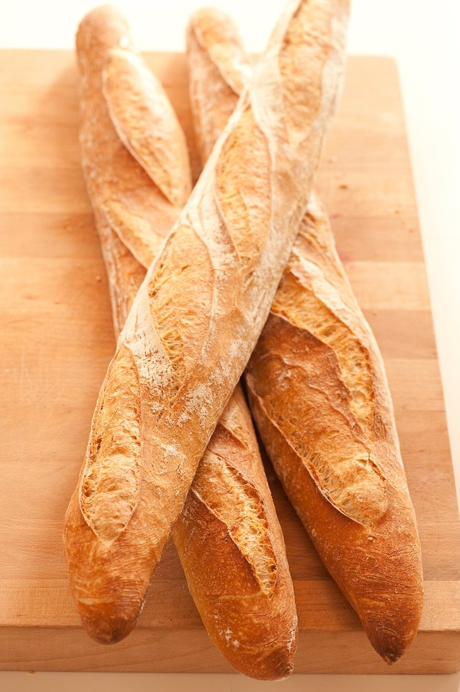
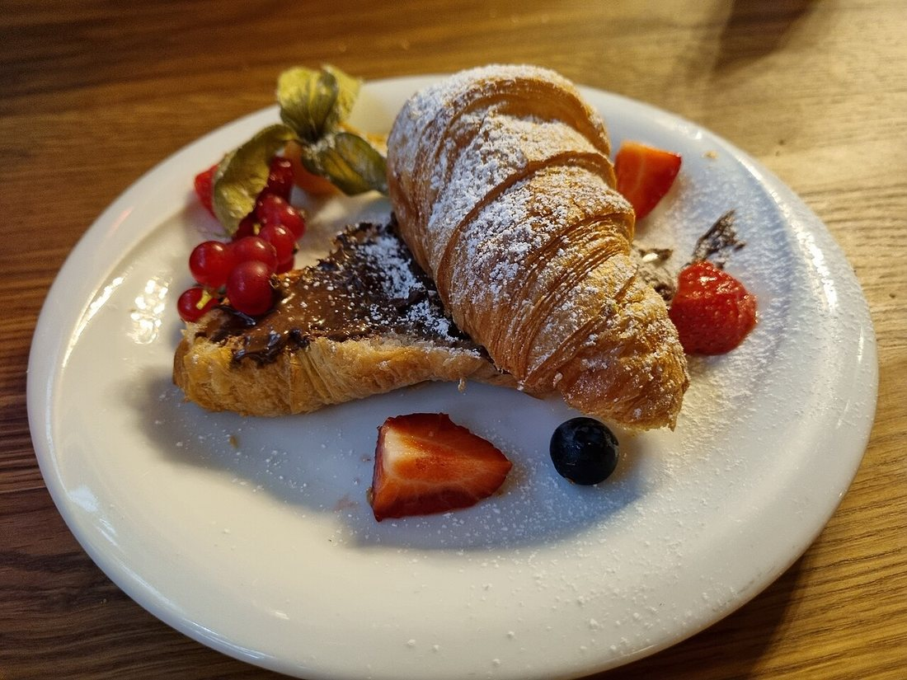
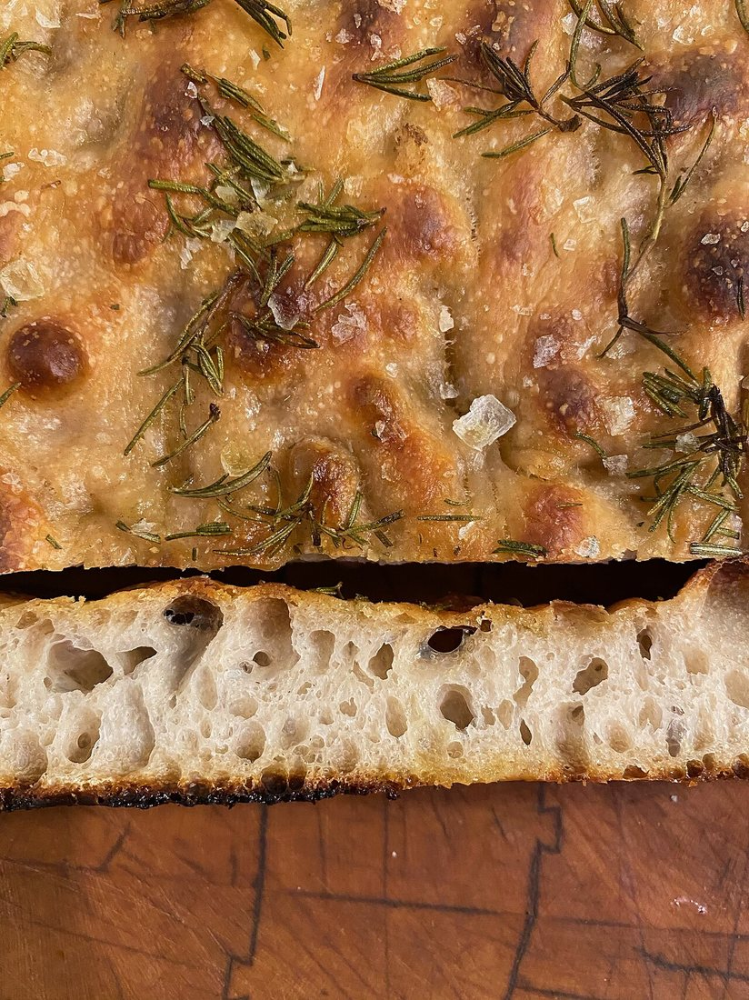
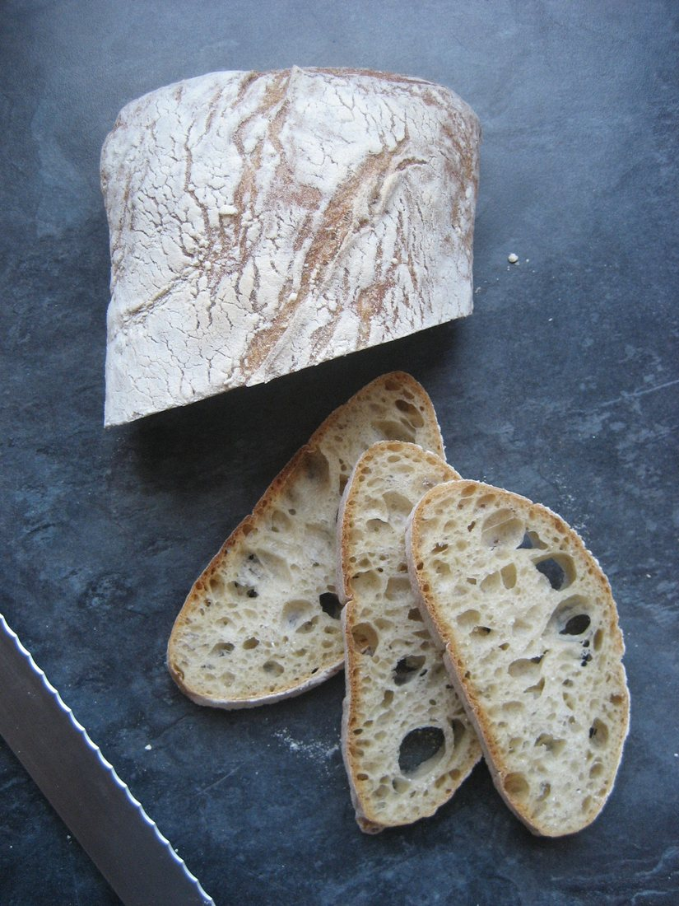
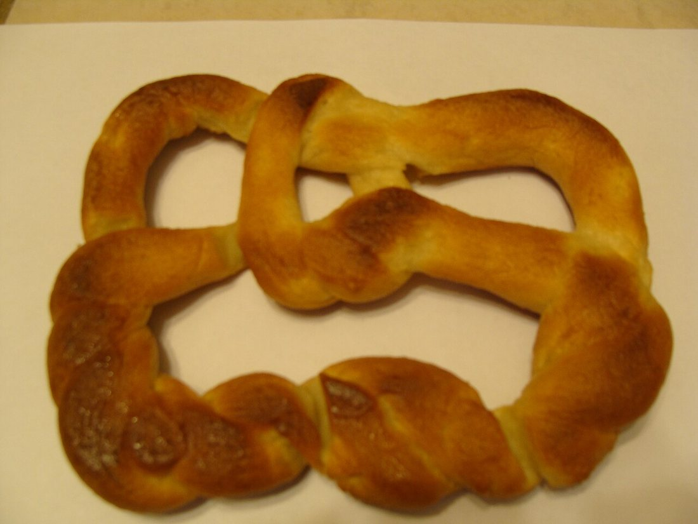
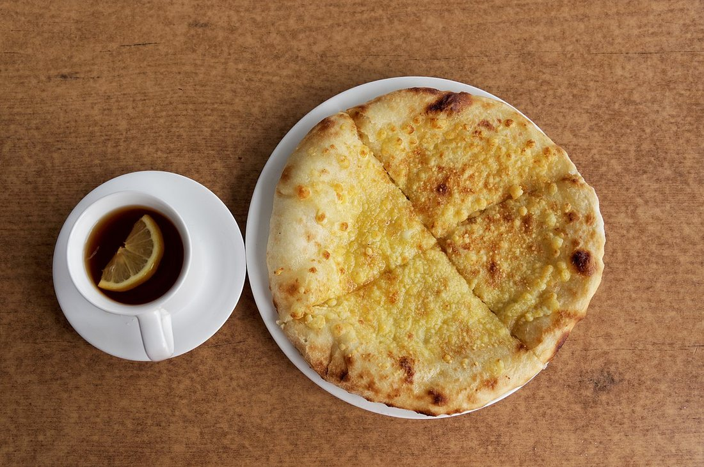
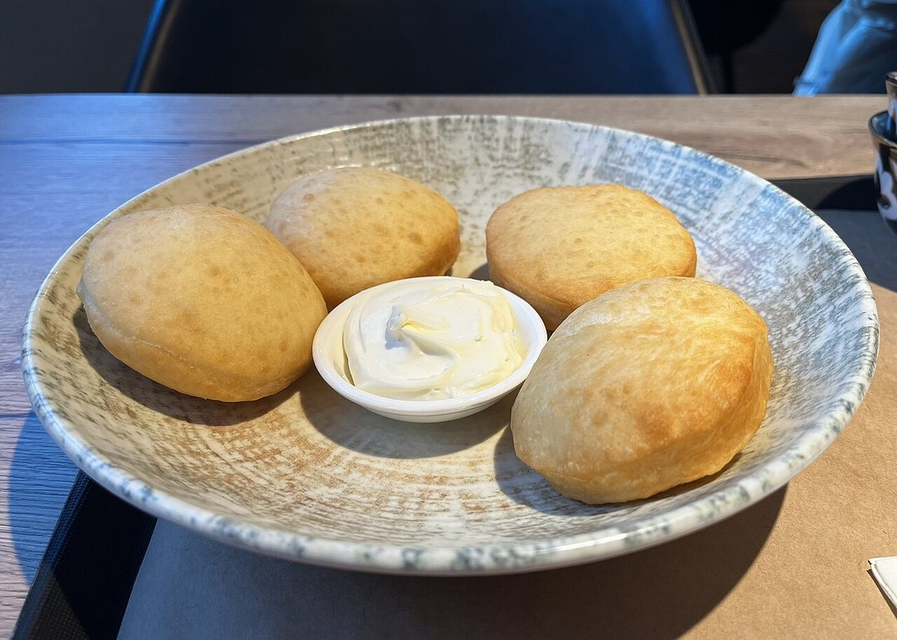
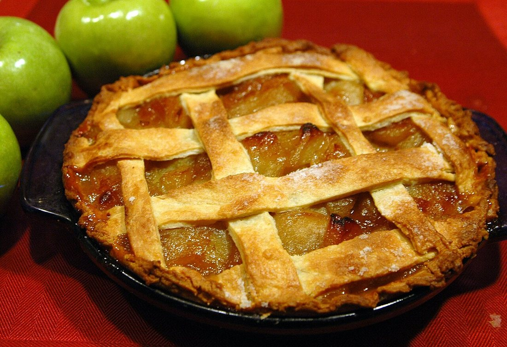
Нанның негізгі құрамдас бөліктері The Basic Ingredients of Bread Основные ингредиенты выпечки
ҰнFlourМука
Негізі. Клейковина қамырды серпімді етеді.The base. Gluten makes dough elastic.Основа. Клейковина делает тесто упругим.
СұйықтықLiquidЖидкость
Су не сүт ұнды қамырға біріктіреді.Water or milk binds flour into dough.Вода или молоко связывают муку в тесто.
АшытқыLeaveningРазрыхлитель
Ашытқы не сода қамырды көтереді.Yeast or soda makes dough rise.Дрожжи или сода поднимают тесто.
МайFatЖир
Сары май қамырды жұмсақ әрі дәмді етеді.Butter makes dough soft and rich.Масло делает тесто мягким и вкусным.
ТұзSaltСоль
Дәм береді, ашытқыны реттейді.Adds flavour, controls the yeast.Даёт вкус, регулирует дрожжи.
Қант, жұмыртқаSugar & eggsСахар, яйца
Тәттілік, түс және байланыс үшін.For sweetness, colour and binding.Для сладости, цвета и связки.
Қамырдың негізгі түрлері The Main Types of Dough Основные виды теста
🔍 Үлкейту үшін суретті басыңыз. 🔍 Tap a photo to enlarge it. 🔍 Нажмите на фото, чтобы увеличить.
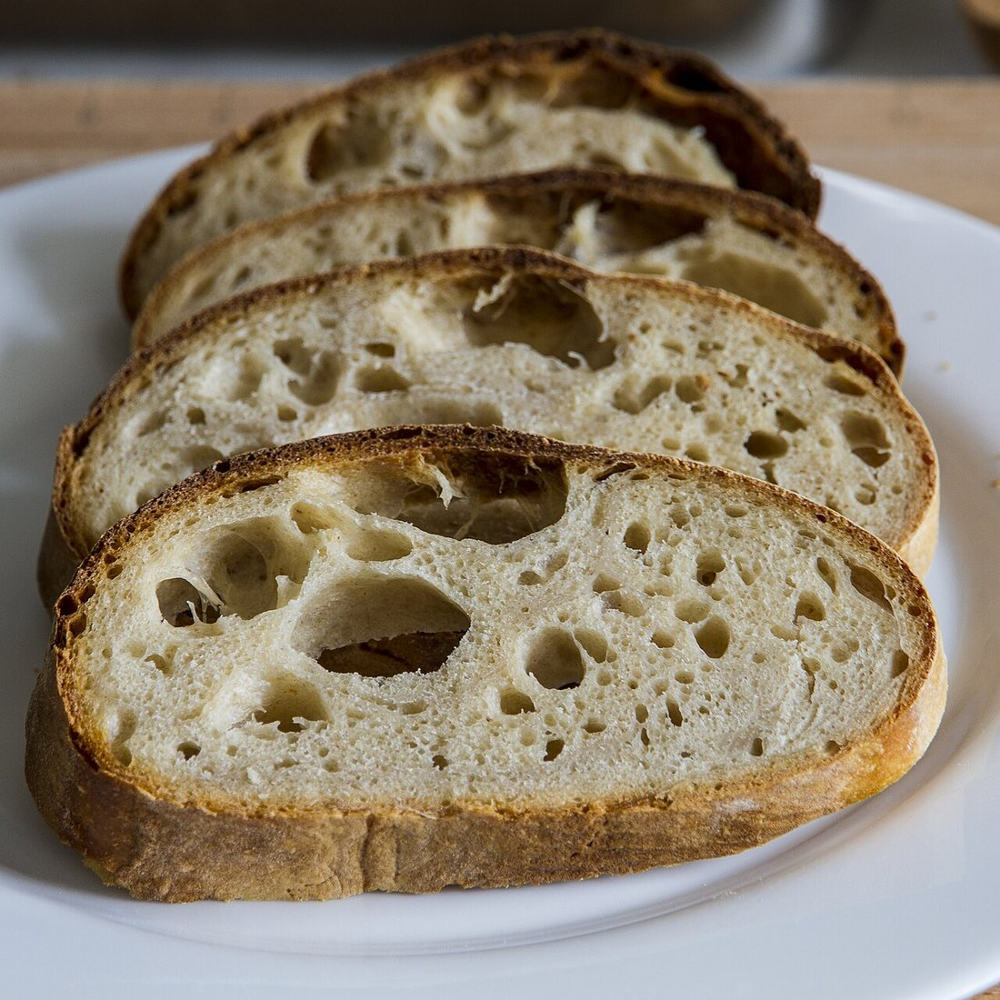
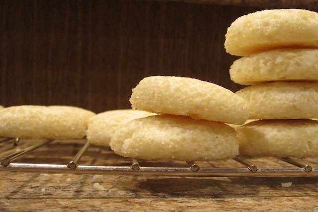
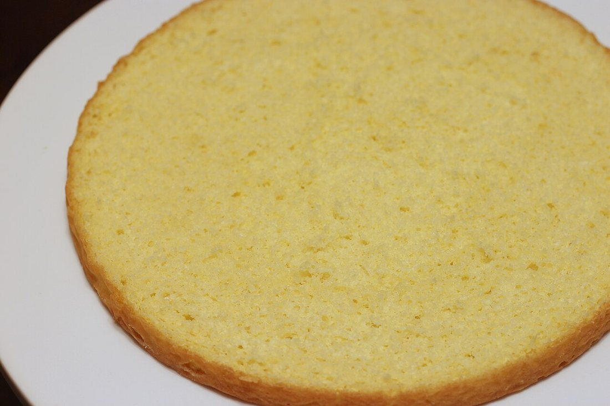
Ашытқылы нанды пісірудің 5 қадамы 5 Steps of Baking Yeast Bread 5 шагов выпечки дрожжевого хлеба
Илеу қамырын дайындау.Mixing.Замес. Ұн, жылы су, ашытқы, тұзды араластырамыз.Mix flour, warm water, yeast and salt.Смешиваем муку, тёплую воду, дрожжи и соль.
Илеу.Kneading.Вымешивание. Қамырды ұзақ илейміз — клейковина дамып, серпімді болады.Knead the dough well so gluten develops and it turns elastic.Долго месим тесто — клейковина развивается, оно становится упругим.
Ашыту.Proofing.Расстойка. Жылы жерде 1–2 сағат тұрады — қамыр екі есе көтеріледі.Let it rest warm for 1–2 hours until it doubles in size.Оставляем в тепле на 1–2 часа — тесто увеличивается вдвое.
Пішіндеу.Shaping.Формовка. Қамырды батон, тоқаш не өрім түрінде қалыптаймыз.Shape the dough into a loaf, bun or braid.Формуем тесто в батон, булочку или косичку.
Пісіру.Baking.Выпечка. Ыстық пеште (180–220 °C) алтын түске енгенше пісіреміз.Bake in a hot oven (180–220 °C) until golden.Печём в горячей печи (180–220 °C) до золотистой корочки.
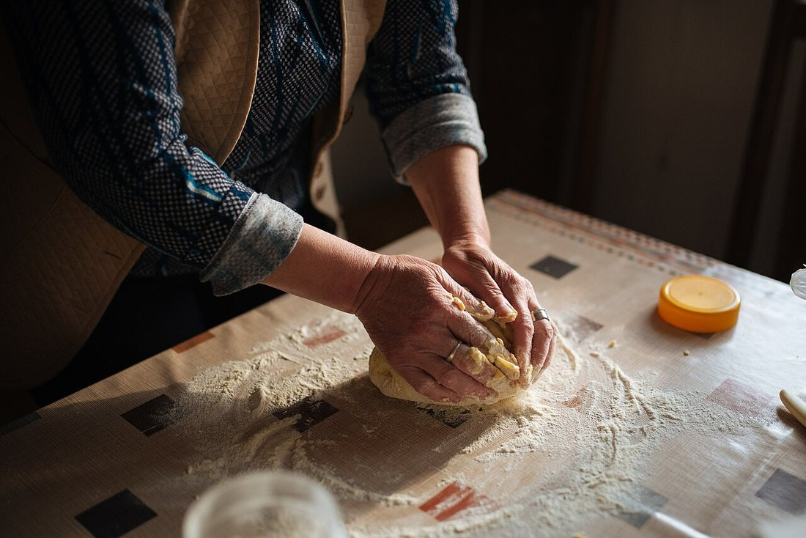
Қолмен илеу — қамырға күш пен жылу береді.Hand kneading gives the dough strength and warmth.Замес руками придаёт тесту силу и тепло.
Қамыр түрлерін салыстыру Comparing the Types of Dough Сравнение видов теста
| Тесто | Что поднимает | Каким становится | Изделия |
|---|---|---|---|
| Дрожжевое | дрожжи / закваска | воздушное, пористое | хлеб, баурсак, пирожки |
| Слоёное | пар от слоёв масла | хрустящее, слоистое | круассан, самса, штрудель |
| Песочное | не поднимается (много жира) | рассыпчатое, хрупкое | печенье, тарт, корж пирога |
| Бисквитное | взбитые яйца (воздух) | лёгкое, нежное | торт, рулет, кекс |
| Қамыр | Не көтереді | Қандай болады | Бұйымдар |
|---|---|---|---|
| Ашытқылы | ашытқы / ашытқы көже | көпіршік, көзшелі | нан, бауырсақ, пирожки |
| Қатпарлы | май қабаттарының буы | күтірлеген, қабат-қабат | круассан, самса, штрудель |
| Уыздақ | көтерілмейді (май көп) | үгітілген, морт | печенье, тарт, пирог қабаты |
| Бисквит | көпірткен жұмыртқа (ауа) | жеңіл, нәзік | торт, рулет, кекс |
| Dough | What raises it | What it becomes | Products |
|---|---|---|---|
| Yeast | yeast / sourdough | airy, full of holes | bread, baursak, buns |
| Puff | steam from butter layers | crisp, flaky | croissant, samsa, strudel |
| Shortcrust | does not rise (much fat) | crumbly, short | cookies, tart, pie base |
| Sponge | whipped eggs (air) | light, tender | cake, roll, kex |
Жас наубайшыға кеңестер Tips for a Young Baker Советы юному пекарю
⚖️ Дәл өлшеңізMeasure exactlyТочно отмеряйте
Нан пісіру — нақты ғылым. Ұн мен сұйықтықты таразымен өлшеңіз.Baking is an exact science. Weigh flour and liquid on scales.Выпечка — точная наука. Взвешивайте муку и жидкость на весах.
🌡️ Жылы сұйықтықWarm liquidТёплая жидкость
Ашытқыны жылы (ыстық емес!) суда оятыңыз — әйтпесе ол өледі.Wake yeast in warm (not hot!) water, or it will die.Будите дрожжи в тёплой (не горячей!) воде, иначе они погибнут.
⏳ АсықпаңызDon't rushНе торопитесь
Қамырға көтерілуге уақыт беріңіз — асыққан нан тығыз болады.Give the dough time to rise — hurried bread turns out dense.Дайте тесту время подняться — спешка делает хлеб плотным.
🔥 Пешті қыздырыңызPreheat the ovenПрогрейте печь
Нанды тек жақсы қызған пешке салыңыз — қабығы әдемі болады.Put bread only into a fully heated oven for a good crust.Ставьте хлеб только в хорошо разогретую печь — для красивой корочки.
💬 Қорытынды 💬 In a nutshell 💬 Главное
Бір ғана ұн мен судан әлемнің сан түрлі наны туады: француз багеті, итальян чиабаттасы, неміс крендельі, грузин хачапуриі мен қазақ бауырсағы. Айырмашылық — қамырдың түрінде, ашытуда және пісіру тәсілінде. Осы негіздерді білген адам кез келген халықтың дәмін өз қолымен жасай алады. From the same flour and water the world makes endless breads: the French baguette, Italian ciabatta, German pretzel, Georgian khachapuri and Kazakh baursak. The difference lies in the type of dough, the leavening and the way it is baked. Anyone who masters these basics can recreate the taste of any nation with their own hands. Из одной и той же муки и воды рождается бесконечное множество хлебов: французский багет, итальянская чиабатта, немецкий крендель, грузинское хачапури и казахский баурсак. Разница — в виде теста, в разрыхлении и в способе выпечки. Тот, кто освоил эти основы, сможет своими руками воссоздать вкус любого народа.